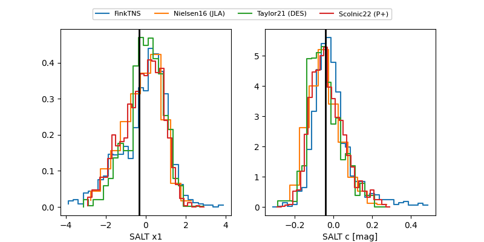

FINK: ZTF25abmhlnc
Lasair: ZTF25abmhlnc
ALeRCE: ZTF25abmhlnc
TNS: 2025wht
YSE: 2025wht
ZTF25abmhlnc (ztf,fink)
2025wht (tns,yse)
ATLAS25kut (atlas)
equatorial (ra, dec) = (265.2762,+25.70247)
galactic (l, b) = (49.8865,+26.10487)

last atlasc=19.40, atlaso=19.25, ztfg=19.50, ztfr=19.26
2 atlasc, 3 atlaso, 11 ztfg, 10 ztfr detections